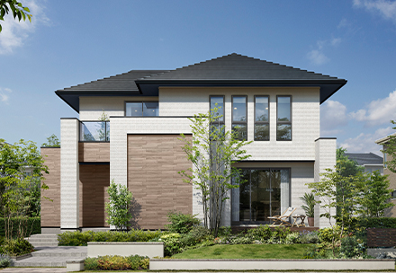
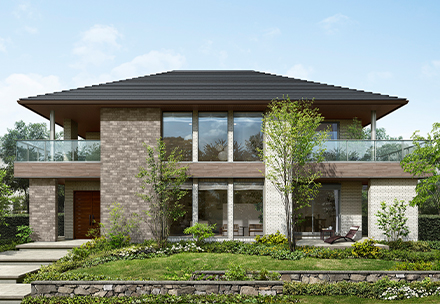
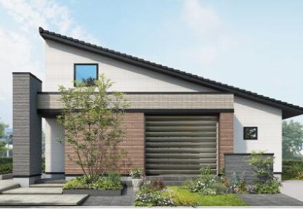
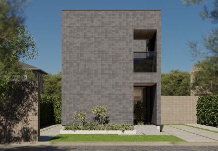
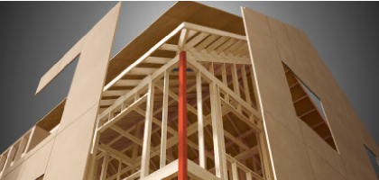
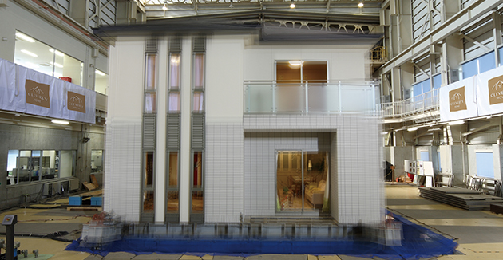
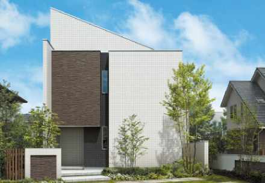
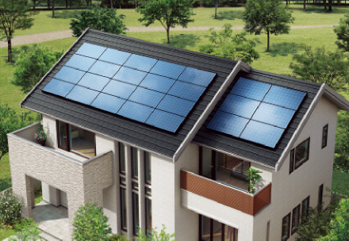
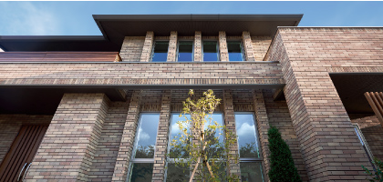
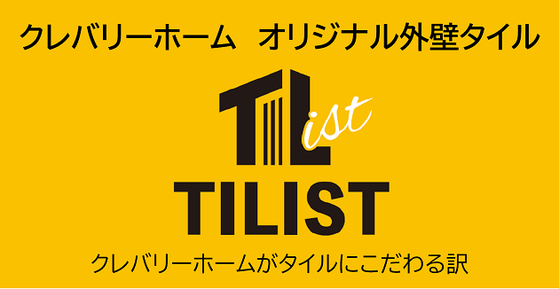

① 会社基本データ（規模・エリア・FC方式）
クレバリーホームは、FC（フランチャイズ）方式で全国展開する注文住宅メーカー。「外壁タイルの家」を全商品標準仕様で提供することが最大の特徴で、累計供給棟数は2023年4月時点で40,000棟達成（公式沿革）。28年にわたるFC展開で全国150店舗以上のネットワークを構築している。
| 項目 | 内容 |
|---|---|
| 会社名 | 株式会社クレバリーホーム |
| 旧社名 | 株式会社新昭和FCパートナーズ（2022年4月に社名変更） |
| 設立 | 2016年11月1日（FC事業開始は1998年4月） |
| 本社 | 千葉県君津市東坂田4丁目3番3号 4階 |
| 代表者 | 代表取締役 松田 芳輝 |
| 資本金 | 1億100万円（2019年3月時点） |
| 親会社 | 株式会社新昭和（資本金10億8,268万円 / グループ売上高 約1,084億円＝108,356百万円 / 2025年3月期・単純合算） |
| グループ従業員数 | 約2,595名（新昭和グループ全体 / 2025年4月時点） |
| 累計供給棟数 | 累計40,000棟達成（2023年4月時点／公式沿革） |
| 展開エリア | 北海道から沖縄まで全国（FC加盟店による展開） |
| 営業拠点 | 全国150店舗以上（直営＋FC加盟店 / 2025年時点） |
| 事業内容 | フランチャイズ事業、住宅事業 |
| ブランド歴 | 28年（1998年〜） |
新昭和グループ主要会社
| グループ会社 | 特徴 |
|---|---|
| 株式会社新昭和 | グループ本体。千葉県を中心に注文住宅・分譲事業 |
| ウィザースホーム | 新昭和の直営注文住宅ブランド（2×6工法） |
| 株式会社クレバリーホーム | FC本部。全国展開の注文住宅ブランド |
| 新昭和リビンズ | 不動産・賃貸管理 |
| 旭建設 | 建設工事 |
フランチャイズ方式の特徴
- 全国の地元工務店・ビルダーがFC加盟店として施工
- 本部が商品開発・設計ノウハウ・資材調達・ブランディングを一元管理
- 加盟店が地域密着の営業・施工・アフターサービスを担当
- スケールメリットによる資材の一括調達でコストダウンを実現
一言で言うと？
「外壁タイルの家」を全商品標準仕様で提供する、全国FC展開の注文住宅メーカー。タイル外壁による圧倒的なメンテナンスコスト削減と、プレミアム・ハイブリッド構法による高い耐震性が最大の武器。累計40,000棟超の供給実績（2023年4月時点・公式沿革）を持ち、28年にわたるFC展開で全国150店舗以上のネットワークを構築している。
② 商品ラインナップと坪単価

注文住宅（フルオーダー）

Vシリーズ（最上位モデル）

Granshare（平屋専用）
出典: クレバリーホーム公式サイト
| 商品名 | 坪単価目安（2026年） | 主な特徴 |
|---|---|---|
| Vシリーズ | 85〜108万円 | 最上位モデル。ハイグレードタイル標準。吹き抜け・高天井の開放空間。デザイン性最重視 |
| CXシリーズ | 80〜95万円 | 人気No.1。「価格以上の価値」がコンセプト。断熱等級6標準。コストパフォーマンス最強 |
| ENELITE（エネリート） | 97〜100万円 | 超高断熱＋ZEH対応。太陽光・蓄電池・HEMS標準 |
| ENELITE ZERO | 100万円〜 | エネルギー収支ゼロを目指すZEH特化モデル |
| ENELITE THERMO | 非公開（ENELITEベース） | 断熱等級7・G3水準。UA値0.26以下。フェノールフォーム外張断熱＋充填断熱の2重構造 |
| Granshare | 85万円〜 | 平屋専用モデル。ワンフロアの快適動線 |
| Skyshare | 90万円〜 | 多層階住宅（3階建て対応） |
| Harmonie | 80万円〜 | 二世帯住宅向け |
セミオーダー・規格住宅

| 商品名 | 坪単価目安（2026年） | 主な特徴 |
|---|---|---|
| clevers（クレバース） | 75万円程度 | 60プランから選べるセミオーダー。断熱等級7（G3）標準対応。2024年9月発売の新商品 |
コンセプトモデル
| 商品名 | 坪単価目安 | 主な特徴 |
|---|---|---|
| hapies（ハピエス） | 70万円〜 | 共働き家族向け。家事効率を追求 |
| inumo（イヌモ） | 75万円〜 | 犬と暮らす家。ペット共生設計 |
| クレバコ+ | 85万円〜 | 箱型デザインのモダン住宅 |
全商品共通の標準仕様
- 外壁タイル：全商品で磁器質タイル外壁が標準（30種類以上・150色以上）
- 陶器瓦屋根：標準採用
- 樹脂サッシ＋Low-Eトリプルガラス：標準
- プレミアム・ハイブリッド構法：全棟標準
- 全熱交換型24時間換気：標準
価格帯の目安
| 指標 | 金額 |
|---|---|
| 全商品平均坪単価 | 約91.5万円（おうちキャンバス調査） |
| 平均建築費 | 約2,640万円（税抜 / 平均35.6坪） |
| ボリュームゾーン | 70〜95万円/坪 |
| clevers（最安帯） | 75万円/坪〜 |
| ENELITE ZERO（最高帯） | 100万円/坪〜 |
③ 構造・耐震性能

プレミアム・ハイブリッド構法（全棟標準）
クレバリーホーム独自開発の構法。「SPG構造」と「モノコック構造」の2つを融合させたハイブリッド構法。
SPG構造（ストロング・ポスト・グリッド）
| 項目 | 詳細 |
|---|---|
| 原理 | 1階と2階を貫く通し柱で建物を強固に一体化 |
| 通し柱の数 | 一般的な在来工法の2〜3倍をグリッド毎に配置 |
| 効果 | 地震・台風の揺れや屋根荷重をスムーズに基礎へ伝達 |
| 設計 | 独自のグリッド設計に基づく構造計算と検証試験 |
モノコック構造
| 項目 | 詳細 |
|---|---|
| 原理 | 床・壁・天井の6面すべてを構造用耐力面材で構成 |
| 壁倍率 | 最大4.9〜5.0倍（業界最高レベルの上限値） |
| せん断強度 | 合板の2倍以上のせん断強度を誇る構造用耐力壁 |
| 効果 | 建物のねじれを防ぎ、激しい揺れに面全体で抵抗 |
高精度HSS金物
| 項目 | 詳細 |
|---|---|
| 接合強度 | 一般的な在来工法の1.5〜3倍 |
| 防錆処理 | カチオン電着塗装（塩害地域にも対応） |
エンジニアリングウッド
| 項目 | 詳細 |
|---|---|
| 素材 | 欧州アカマツ（高強度・安定品質） |
| 特徴 | 含水率を管理し、強度のバラつきを最小化 |
耐震等級
| 項目 | 数値 |
|---|---|
| 耐震等級 | 全棟: 耐震等級3対応（最高等級） |
| 構造計算 | 全棟実施 |

実大振動実験
| 項目 | 詳細 |
|---|---|
| 最大加振 | 1,791gal（阪神・淡路大震災の219%の地震波） |
| 加振回数 | 阪神・淡路大震災波形で100%・150%・200%の地震波を各2回、計6回 |
| 結果（構造体） | 主要構造用部材に損傷なし |
| 結果（外壁タイル） | タイルの剥離・損傷一切なし |
| 結果（内装） | 軽微な破損のみ（補修可能な状態） |
地震被害実績
新潟県中越地震（2004年）・新潟県中越沖地震（2007年）関連において、クレバリーホーム施工住宅で震度5以上の揺れを20回以上経験した結果、全壊・半壊ゼロ（公式「地震に強い家」ページ記載）。
公式の表現は「震度5以上の揺れを20回以上経験した新潟県中越・中越沖地震において全壊・半壊ゼロ」。震度7／震度6強エリアに施工住宅が存在したかどうかは公式で明示されていないため、ここでは公式文言に寄せて記載している。
④ 断熱性能

UA値（外皮平均熱貫流率）
| 仕様 | UA値 | 断熱等級 | HEAT20 |
|---|---|---|---|
| 標準仕様（CX/Vシリーズ等） | 0.46 W/m²K以下 | 等級6 | G2水準 |
| ENELITE THERMO（超高断熱） | 0.26 W/m²K以下 | 等級7 | G3水準 |
| clevers（規格住宅） | 等級7対応 | 等級7 | G3水準 |
| （参考）国の省エネ基準 | 0.87 W/m²K | 等級4 | — |
断熱材の仕様（標準仕様）
| 部位 | 断熱材 | 厚さ |
|---|---|---|
| 外壁 | 無機質繊維系断熱材マット | 100mm |
| 天井 | 無機質繊維系断熱材ブローイング or マット | 260mm or 165mm |
| 床下 | 押出法ポリスチレンフォーム3種 | 65mm（外気接触部100mm） |
ENELITE THERMOの断熱仕様
| 部位 | 断熱材 | 厚さ |
|---|---|---|
| 外壁（内側） | 高密度無機質繊維系断熱材 | 充填 |
| 外壁（外側） | フェノールフォーム断熱材1種2号CⅡ | 外張り |
| 天井 | ブローイング断熱材 | 300mm |
| 構造 | 充填断熱＋外張断熱の2重断熱 | — |
窓の仕様
| 項目 | スペック |
|---|---|
| フレーム | 樹脂サッシ（標準） |
| ガラス | アルゴンガス入りLow-Eトリプルガラス（標準） |
| 特徴 | 全商品で樹脂サッシ＋トリプルガラスが標準。窓からの熱の出入りを大幅削減 |
他社との断熱性能比較
| ハウスメーカー | UA値（代表値） | 断熱等級 |
|---|---|---|
| 一条工務店（i-smart） | 0.25 | 等級7 |
| クレバリーホーム（ENELITE THERMO） | 0.26 | 等級7 |
| スウェーデンハウス | 0.38 | 等級6 |
| 三井ホーム | 0.43 | 等級5〜6 |
| クレバリーホーム（標準） | 0.46 | 等級6 |
| 住友林業 | 0.46 | 等級5 |
| 積水ハウス（木造） | 0.46〜0.60 | 等級5 |
| ヘーベルハウス（鉄骨） | 0.55〜0.60 | 等級5 |
クレバリーホームの標準仕様でZEH基準をクリアし断熱等級6を達成。樹脂サッシ＋トリプルガラスが標準なのはこの価格帯では希少。ENELITE THERMOなら一条工務店に迫る断熱等級7に到達。
⑤ 気密性能
C値（相当隙間面積）
| 項目 | 数値 |
|---|---|
| 発泡系断熱材仕様 | C値 0.50〜0.70 cm²/m² |
| 繊維系断熱材仕様 | C値 0.67〜1.20 cm²/m² |
| 全棟測定 | 実施なし（モデル棟・一般物件の実測値を公表） |
気密性の特徴
- 壁内部の室内側をベーパーバリアシート（気密シート）で覆う気密施工を実施
- コンセントボックスにも丁寧な気密処理を施工
- モノコック構造による面構造のため、隙間が生じにくい
- ただし、数値を保証するものではなく、加盟店の施工品質に依存する部分がある
他社との気密性能比較
| ハウスメーカー | C値（公表データ） | 全棟測定 |
|---|---|---|
| 一条工務店 | 0.59（全棟平均） | 全棟実施 |
| クレバリーホーム | 0.50〜1.20（実測値） | 実施なし |
| 住友林業 | 非公表 | 希望者のみ |
| 積水ハウス | 非公表 | 実施せず |
| ヘーベルハウス | 非公表 | 実施せず |
C値を数値で公表している点は大手HMの中では評価できるが、全棟測定は未実施。気密を重視する方はFC加盟店に「中間気密測定」を依頼し、C値1.0以下を確認するのがおすすめ。
⑥ 換気・空調システム

全熱交換型24時間換気システム「スマートエブリZERO」
| 項目 | スペック |
|---|---|
| 方式 | 第1種全熱交換型換気 |
| 温度交換効率 | 約75%の電力使用量カット（非熱交換型比） |
| 給気フィルター | PM2.5対応高性能フィルター搭載 |
| 湿度管理 | 温度と湿度の両方を交換（全熱交換） |
| 標準仕様 | 全商品で標準 |
換気システムの特徴
- 排気する空気から熱を回収し、取り入れる新鮮な外気に移す → 冬場の冷気、夏場の熱気が室内に入りにくい
- 花粉・ウイルス・PM2.5を高性能フィルターでカット
- 冷暖房費を大幅に節減できる全熱交換方式
- 給気と排気を両方機械で行う第1種換気で、安定した換気量を確保
⑦ 外壁タイル（クレバリーホーム最大の特徴）

タイルの基本仕様

| 項目 | 詳細 |
|---|---|
| 素材 | 磁器質タイル（土・石を高温で焼き固めた自然素材） |
| 種類 | 30種類以上 |
| カラー | 150色以上 |
| 受賞歴 | グッドデザイン賞 2年連続受賞（2020年「クレバコタイル」／2021年は住宅用外装・住宅用内装・産業向けマネジメントの3カテゴリ同時受賞＋キッズデザイン賞で2年連続W受賞・計5冠を公式が訴求） |
| 標準仕様 | 全商品で外壁タイルが標準（他社ではオプション扱いが多い） |
タイルの5大性能
| 性能 | 詳細 |
|---|---|
| 耐候性 | 石と同様に劣化・変色しにくい。紫外線による退色もほぼなし |
| 耐汚性 | 親水機能によるセルフクリーニング。汚れが付着しにくく雨で流れ落ちる |
| 耐水性 | 磁器質タイルは雨水をほとんど浸透させない。窯業系サイディングより優れた防水性 |
| 耐傷性 | 釘程度では傷がつかない抜群の硬度。擦りキズ・掻きキズに強い |
| 耐震性 | 阪神・淡路大震災の200%の地震波でもタイルの剥離・損傷ゼロ |
メンテナンスコスト比較（50年間）
| 外壁材 | 50年間のメンテ費用 | 内訳 |
|---|---|---|
| 窯業系サイディング＋コロニアル屋根 | 約700万円 | 10年毎に再塗装（約140万円×5回） |
| クレバリーホーム（タイル＋陶器瓦） | 約275万円 | 10年毎に洗浄・板金防水（約55万円×5回） |
| 差額 | 約425万円の削減 | — |
ARCHIST視点
50年間で約425万円のメンテナンスコスト削減は極めて大きい。「建てた後にかかるお金」まで含めたトータルコストで考えると、クレバリーホームのタイル標準仕様はローコスト住宅に匹敵するコスパを持つ。住宅ローンの支払いが終わった後もメンテ費用に悩まされない安心感は、他社にない明確な差別化ポイント。
⑧ 保証・メンテナンス
6つの保証制度
| 保証名 | 保証期間 | 内容 |
|---|---|---|
| 住宅完成引渡保証 | 契約〜完成 | FC加盟店が工事継続不可の場合、クレバリー共済会が完成・引渡し。登録料・保証料・手数料ゼロ |
| 瑕疵保証 | 10年 | 構造耐力上主要部分＋雨水浸入防止部分。第三者機関による検査＋専門検査員の現場検査2回 |
| 建物保証 | 初期20年 → 最長60年 | 20年目以降、定期点検＋指定有償メンテナンスで10年単位で延長 |
| 防蟻保証 | 初期20年 → 最長60年 | ヤマトシロアリ・イエシロアリ対象。有償メンテナンスで延長 |
| 設備15年保証 | 15年 | キッチン・浴室・トイレ・給湯器・洗面台。修理回数無制限。出張料・部品代無料。24時間365日受付 |
| 地盤35年保証（オプション） | 35年 | 不同沈下に起因する建物損害を1事故最大5,000万円まで補償 |
他社との保証期間比較
| ハウスメーカー | 構造体初期保証 | 最大延長 | 特徴 |
|---|---|---|---|
| クレバリーホーム | 20年 | 60年 | 住宅完成保証付き。設備15年保証。24時間受付 |
| 一条工務店 | 30年 | 30年 | シロアリ10年目・20年目無償 |
| 住友林業 | 30年 | 60年 | 長期優良住宅前提 |
| 積水ハウス | 30年 | 永年 | ユートラスシステム |
| ミサワホーム | 35年 | 永年 | 業界初の長期保証 |
| タマホーム | 10年 | 60年 | シロアリ10年保証含む |
初期保証20年は大手HMの中ではやや短めだが、設備15年保証（修理回数無制限・24時間受付）は業界トップクラス。住宅完成引渡保証はFC方式ならではの安心材料。
⑨ 外壁タイル深掘り（クレバリーホーム独自セクション）
なぜ「全商品タイル標準」が凄いのか？
他社のタイル外壁対応状況:
| ハウスメーカー | タイル外壁 | 備考 |
|---|---|---|
| クレバリーホーム | 全商品標準 | 追加費用なし |
| 一条工務店 | ハイドロテクトタイル（グランスマートのみ標準） | 他商品はオプション |
| 積水ハウス | オプション | 高額追加 |
| 住友林業 | オプション | 高額追加 |
| タマホーム | オプション | 対応商品限定 |
一般的に外壁をサイディングからタイルに変更すると200〜400万円のオプション費用がかかる。クレバリーホームはこれを標準仕様に組み込んでいるため、見た目の坪単価だけでは比較できないコスパの良さがある。
タイルの「セルフクリーニング機能」
- タイル表面は親水性を持つ
- 雨水がタイルと汚れの間に入り込む
- 汚れが浮き上がり、雨と一緒に流れ落ちる
- 結果として外壁の美しさが長期間維持される
タイル外壁の「資産価値」への影響
- 塗り替え不要のため、売却時にも外壁の状態が良好
- 30年後でも外観の劣化が少なく、中古住宅としての印象が良い
- メンテナンス履歴が少なくて済むため、維持管理の負担が軽い
⑩ 客層・向き不向き
典型的な施主プロファイル
| 属性 | 傾向 |
|---|---|
| 年齢 | 30〜45歳が中心 |
| 世帯構成 | 共働きファミリー・子育て世代が最多 |
| 世帯年収 | 500〜800万円がボリュームゾーン |
| 最低年収目安 | 世帯年収450万円〜（cleversなら検討可） |
| 価値観 | 「建てた後のコスト」まで含めたトータルコスト重視 |
| 情報収集 | SNS・住宅展示場・比較サイトを併用 |
クレバリーホームを選ぶ理由TOP3
- 外壁タイルが標準仕様 → メンテナンスコストの大幅削減。50年で約425万円お得
- コストパフォーマンスの高さ → 大手HM並みの性能をミドルプライスで実現
- 耐震性能への安心感 → プレミアム・ハイブリッド構法＋実大振動実験の実績
施主の特徴
- 「見た目の坪単価」ではなく「トータルコスト（建築費＋メンテ費＋光熱費）」で判断できる合理的なタイプ
- タイル外壁の高級感に惹かれるが、ラグジュアリーブランドには手が届かない層
- 地元の工務店の安心感と、大手HMのブランド力の「いいとこどり」を求める
⑪ 他社比較表（6社比較）
総合比較表
| 項目 | クレバリーホーム | 一条工務店 | 住友林業 | 積水ハウス | タマホーム | ヘーベルハウス |
|---|---|---|---|---|---|---|
| 坪単価目安 | 70〜108万 | 80〜105万 | 80〜130万 | 85〜120万 | 50〜80万 | 90〜120万 |
| UA値（代表） | 0.46（標準） | 0.25 | 0.46 | 0.46〜0.60 | 0.55（標準） | 0.55〜0.60 |
| C値 | 0.50〜1.20 | 0.59（全棟） | 非公表 | 非公表 | 非公表 | 非公表 |
| 構造 | 木造軸組＋モノコック | 木造2×6 | 木造BF構法 | 鉄骨/木造 | 木造軸組 | 鉄骨（ALC） |
| 外壁タイル | ◎（全商品標準） | ○（一部標準） | △（オプション） | △（オプション） | △（オプション） | △（オプション） |
| 保証（初期） | 20年 | 30年 | 30年 | 30年 | 10年 | 30年 |
| 保証（最大） | 60年 | 30年 | 60年 | 永年 | 60年 | 60年 |
| 販売方式 | FC | 直営 | 直営 | 直営 | 直営/FC | 直営 |
クレバリーホーム vs 一条工務店
| 比較軸 | クレバリーホーム | 一条工務店 |
|---|---|---|
| 断熱・気密 | ○（ENELITE THERMOなら◎） | ◎（業界No.1） |
| 外壁タイル | ◎（全商品標準） | ○（グランスマートのみ標準） |
| メンテコスト | ◎（タイル＋瓦で大幅削減） | ○（タイルだが全商品ではない） |
| 設計自由度 | ◎（フルオーダー） | △（一条ルール制約） |
| 向く人 | タイル外壁・コスパ・自由設計重視 | 断熱性能・光熱費最重視 |
クレバリーホーム vs 住友林業
| 比較軸 | クレバリーホーム | 住友林業 |
|---|---|---|
| 外壁 | ◎（タイル標準） | ○（木質感重視） |
| 坪単価 | ○（70〜108万） | △（80〜130万） |
| メンテコスト | ◎ | △（塗り替え必要） |
| 設計自由度 | ○ | ◎（BF構法） |
| 向く人 | メンテコスト・コスパ重視 | 自然素材・設計自由度最重視 |
クレバリーホーム vs タマホーム
| 比較軸 | クレバリーホーム | タマホーム |
|---|---|---|
| 初期費用 | △（70〜108万/坪） | ◎（50〜80万/坪） |
| メンテコスト | ◎（タイルで大幅削減） | △（サイディング塗替え必要） |
| 50年トータル | ◎ | △ |
| 断熱標準 | ◎（等級6） | ○（等級4〜5） |
| 向く人 | トータルコスト重視 | 初期費用最優先 |
⑫ よくある後悔・失敗事例
後悔1: FC加盟店によって品質にバラつき
- 「展示場の営業は良かったが、施工担当の対応が雑だった」
- 「同じクレバリーホームでも、隣の県の加盟店の評判は全く違う」
対策：契約前に管轄FC加盟店のGoogle口コミ・施工実績を確認。複数の加盟店を比較し、施工実績の多い店舗を選ぶ
後悔2: アフターサービスの対応スピード
- 「不具合が出た時の対応が良くなかった」
- 「アフターサービスの連絡がなく、こちらから連絡しないと動かない」
対策：FC方式のためアフターサービスは加盟店の体制次第。契約前にアフター担当の人数・対応体制を確認
後悔3: 営業担当の知識不足
- 「説明が不足していると感じるときがあった」
- 「営業が知識不足で、技術的な質問に答えられなかった」
対策：施工管理者や設計士との直接面談を要望。営業担当が合わなければ変更を依頼
後悔4: タイルの溝に汚れが溜まる
「タイル自体はきれいだが、目地（溝）部分にホコリが入ると取れにくい」
対策：目地幅の狭いデザインを選択。年1回の高圧洗浄で十分対応可能
後悔5: 施工途中の情報共有不足
「施工途中で失敗した所を伝えてくれなかった」
対策：定期的な現場見学を依頼。施工記録の写真共有を要望。気になる点は都度確認
後悔6: 間取り・収納の検討不足
- 「コンセントや照明の位置をもっと考えておけばよかった」
- 「収納スペースが足りなかった」
対策：間取り確定前に生活導線をシミュレーション。コンセント配置図は実際の家電リストを元に作成
⑬ よくある質問（FAQ）
クレバリーホームの坪単価はいくら？
外壁タイルは本当にメンテナンスフリー？
フランチャイズだから品質にバラつきがある？
一条工務店と迷っています。違いは？
耐震等級3は本当？
値引き交渉はできる？
clevers（規格住宅）でも外壁タイルは付く？
タイル外壁は地震で剥がれない？
全国どこでも建てられる？
平屋も建てられる？
ZEH対応はできる？
住宅完成引渡保証とは何？
断熱等級7にするには？
タイルの色・デザインは選べる？
クレバリーホームとARCHISTの関係は？
⑭ 顧客満足度データ・まとめ
オリコン顧客満足度ランキング（ハウスメーカー 注文住宅）
| 年度 | クレバリーホームの順位 | スコア | 備考 |
|---|---|---|---|
| 2026年 | 総合14位 | 74.8点 | 52社中 |
2026年 評価項目別スコア
| 項目 | スコア |
|---|---|
| 情報のわかりやすさ | 72.7 |
| モデルハウス | 77.3 |
| ラインアップ | 73.7 |
| 申し込み手続き | 76.3 |
| 営業対応 | 75.2 |
| 価格の納得感 | 74.0 |
| 見積もり対応 | 73.9 |
| 施工対応 | 75.6 |
| デザイン | 75.2 |
| 住宅性能 | 77.9（最高スコア） |
| 設備・仕様 | 75.2 |
| 保証 | 74.1 |
| アフターサービス | 74.0 |
その他の指標
| 指標 | スコア |
|---|---|
| 推奨意向度 | 90.7点 |
HOME4U 項目別評価（7段階中）
| 項目 | 評価 |
|---|---|
| 外観・内観デザイン | 4.8 |
| 安全性能 | 4.6 |
| 間取り | 4.6 |
| 営業力 | 4.5 |
| 快適性能 | 4.4 |
| 設計力 | 4.4 |
| アフターサービス・保証 | 4.0 |
施主の満足度傾向
高評価
- 外壁タイルの高級感とメンテナンスフリー
- 耐震性能
- 断熱・防音性能
- コスパ
低評価
- FC加盟店による対応のバラつき
- アフターサービスの品質差
- 営業担当の知識不足
まとめ
- 外壁タイルの高級感が欲しいけど、オプション費用は払いたくない
- 「建てた後のメンテナンスコスト」まで含めたトータルコストで賢く判断したい
- 耐震性能は最高等級を求めつつ、フルオーダーで自由な間取りを実現したい
- 坪単価70〜100万円の中価格帯で、性能・デザイン・コスパのバランスを重視
- 地元の工務店（FC加盟店）の対応力と、全国ブランドの安心感の両方が欲しい
- 断熱・気密性能を最重視し、数値で業界No.1を求めたい → 一条工務店
- 無垢材・自然素材の木の温もりを最優先したい → 住友林業
- 大手直営の手厚いアフターサービスを最重視 → 積水ハウス・ヘーベルハウス
- 鉄骨の耐火性・耐久性・3階建てが必要 → ヘーベルハウス・積水ハウス
- 予算が総額2,000万円以下 → タマホーム
ARCHIST視点での総括
クレバリーホームは「建てた後のコスト」まで含めたトータルコストで見ると極めて合理的な選択肢。50年で約425万円のメンテナンスコスト削減は、他社にはない明確な差別化ポイント。FC方式ゆえの加盟店ごとのバラつきには要注意だが、管轄加盟店の実績確認と複数社比較で十分に対処可能。タイル外壁×耐震等級3×断熱等級6を坪単価70〜100万円で実現できるコスパは、ミドルプライス帯では最強クラス。